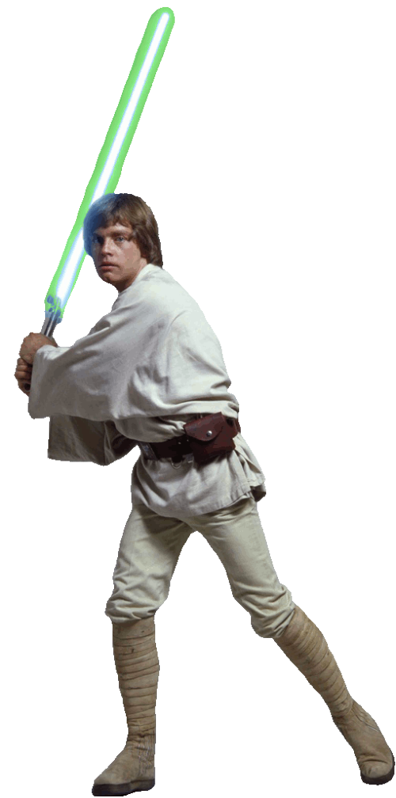
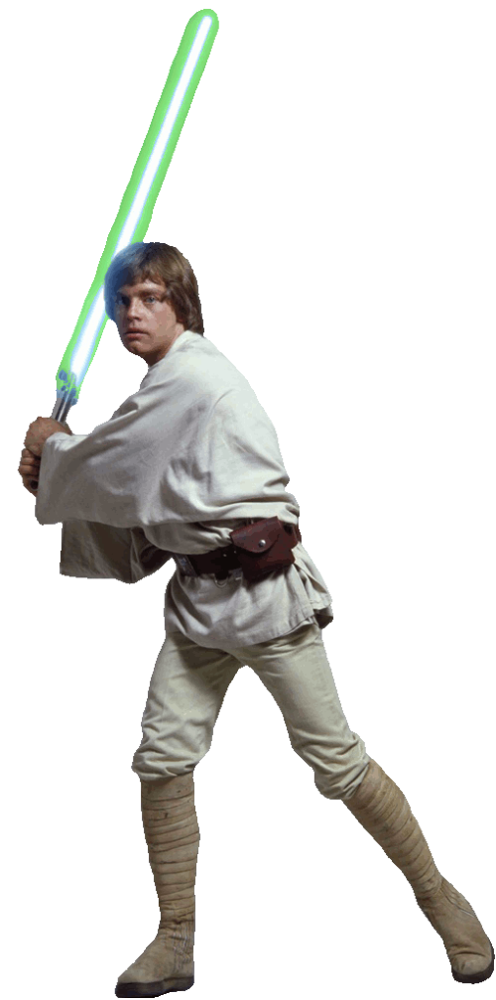
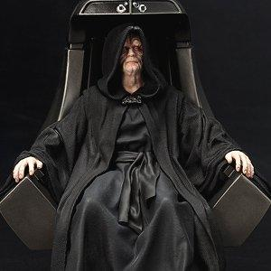
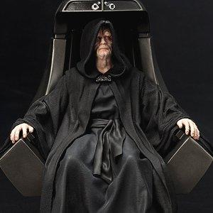

The Star Wars Trilogy, also known as the original trilogy or the classic trilogy, is the first set of three films produced in the Star Wars franchise, an American space opera created by George Lucas. It was produced by Lucasfilm and distributed by 20th Century Fox, and consists of Star Wars (1977),[b] The Empire Strikes Back (1980) and Return of the Jedi (1983). Beginning in medias res, the original trilogy serves as the second act of the nine-episode Skywalker saga. It was followed by a prequel trilogy between 1999 and 2005, and a sequel trilogy between 2015 and 2019. Collectively, they are referred to as the "Skywalker Saga" to distinguish them from spin-off films set within the same universe.[1]
The films center on the Galactic Civil War between the Rebel Alliance and the tyrannical Galactic Empire, as well as the archetypical hero's journey of Luke Skywalker in his quest to become a Jedi under the tutelage of exiled Jedi Masters Obi-Wan Kenobi and Yoda. Luke joins forces with Princess Leia, Han Solo, Chewbacca, C-3PO, R2-D2 and the Rebel Alliance in facing the Empire and the evil Sith Lord Darth Vader. The original Star Wars film received widespread acclaim from critics for its storytelling, characters, John Williams' musical score and its groundbreaking visual and sound effects. The film surpassed 1975's Jaws as the highest grossing film of all time, turning science fiction films into a blockbuster genre, until it was surpassed by E.T. the Extra-Terrestrial in 1982. Both Star Wars and The Empire Strikes Back have been hailed as among the greatest films of all time. With the trilogy's success, Star Wars became a pop culture phenomenon, spawning a multi-million dollar merchandising empire. All three films have been inducted by the Library of Congress for preservation in the United States National Film Registry for being "culturally, historically, or aesthetically significant".
Thousands of actors were assessed in the search for the trilogy's main cast.[15] The selected actors are considered by many viewers to have onscreen chemistry even though some of them were inexperienced, with the notable exceptions of Alec Guinness and Peter Cushing.[16][17] Some, like Ford, have called the dialogue in the scripts clunky, and several lines were unscripted; some of these are considered the most memorable moments in the films.[d]

 
